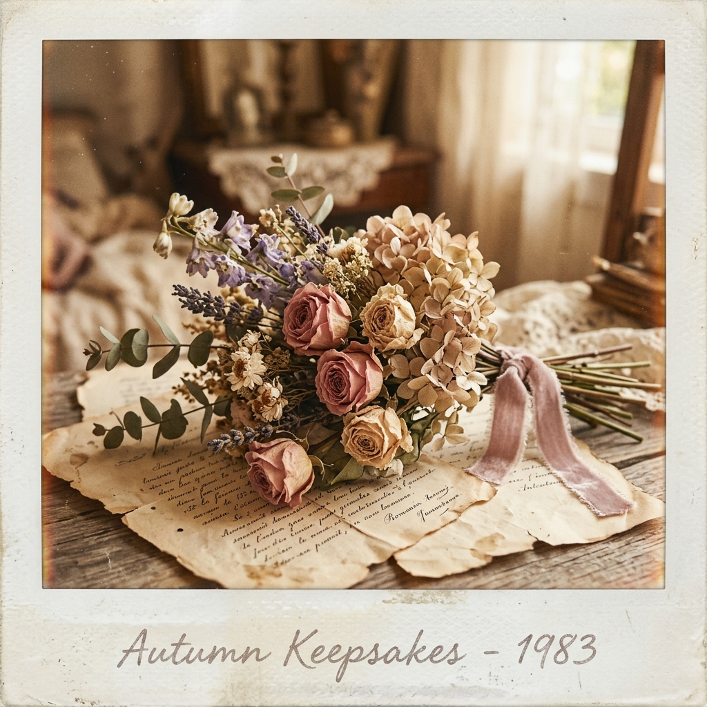
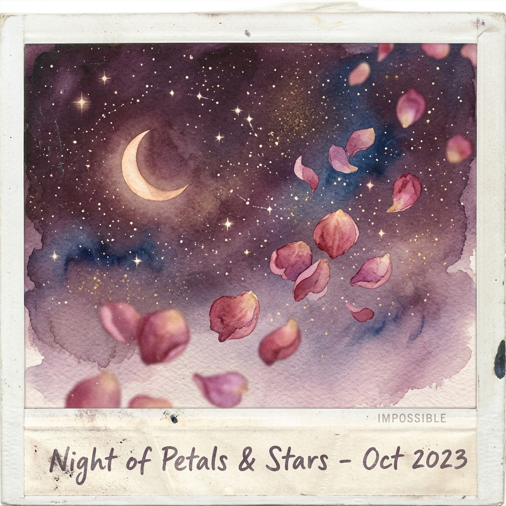

a letter from fate
Asma
the beginning → october 23rd
chapter one
the tiny one arrived
She came into this world small, and loud, and already so very herself. Someone looked at her — maybe not knowing yet — but fate did. Fate wrote her name down carefully, like it mattered. Because it did.

the very beginning ✨
a universe in her eyes 🌙"she arrived like a sentence
the world had been searching for."
chapter two
we grew up, together
There is something sacred about watching someone grow up. The messy hair, the shared secrets, the inside jokes that still make us laugh — years that turned into a story neither of us could have written alone. You were my person, in every chapter of mine too.
chapter three
she built her own world
She built a world out of music and story — the kind that makes you feel something you cannot name. She cried over fictional characters like they owed her something. She sang along to songs at 2am like they were written just for her. (They were. They are.)
"she carried whole universes
inside a playlist."
Spring Day felt like her. Life Goes On felt like her. The kind of girl the poets write about — but she was just being herself, entirely, and brilliantly.
chapter four
then fate quietly rewrote things
There is no grand announcement when something important begins. Fate never sends a warning. It simply arranges things — softly, patiently — until one day you look up and realize the story has already changed.
"and just like that —
the universe said yes."
It was arranged the way only the best things are — not by chance, but by something that knew better. This is what belonging looks like when it is chosen for you and you choose it back.
chapter five
the night before forever
Tonight is different. The air feels different. Everything does. You are standing at a threshold and the version of you that walks through it will be carrying all of this with her — every memory, every person who has ever loved you, every song you have ever cried to.
"take all of it with you.
it made you who you are."
And who you are, Asma, is someone worth an entire love letter written by fate itself.
october 23rd, 2026
the day the story changes
October
23rd
✦ counting down ✦
"may your nikkah be the softest
and most beautiful of beginnings."
we love you, Asma 🌸